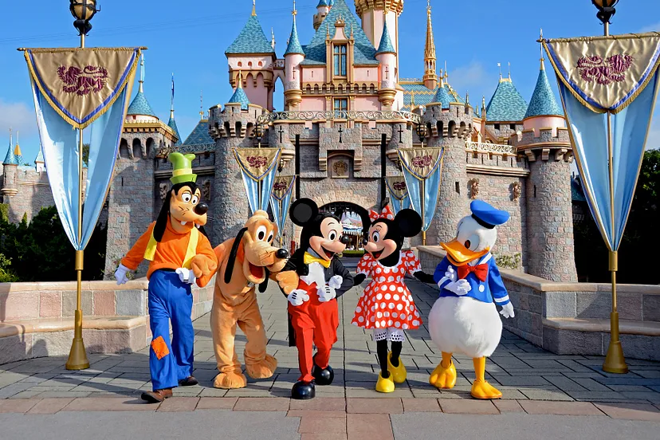
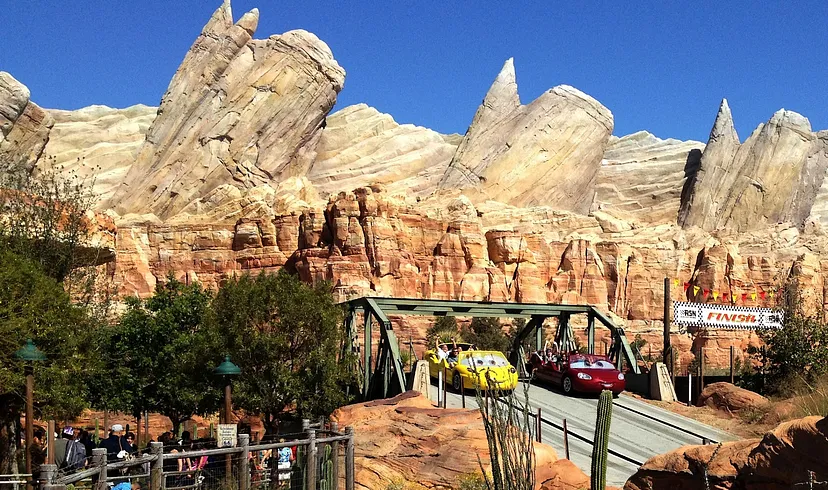

Диснейленд
Уолт Дисней был мечтателем, который ставил перед собой великие цели, и у него было достаточно упорства, чтобы превратить свои мечты в реальность. Диснейленд стал новаторским, разрушающим все каноны тематическим парком развлечений.
Первый в мире Диснейленд (Disneyland) был открыт 17 июля 1955 года в городке Анахайм, к югу от Лос-Анджелеса (штат Калифорния, США).

В этот день американский “король мультипликации” и удачливый бизнесмен Уолт Дисней (Walt Disney) провел пышную церемонию открытия грандиозного увеселительного парка. Это событие телеканал Эй-би-си транслировал в прямом эфире, церемонию открытия парка вел будущий президент США актер Рональд Рейган.

Идея создать увеселительный детский парк возникла у Диснея, когда он гулял с дочерьми в парке. Пока дети катались на каруселях, отец терпеливо сидел на лавочке и ждал, когда дочки нарезвятся. Во время этих прогулок Уолт Дисней задумался о парке, в котором дети и родители могли бы вместе хорошо проводить время.

Увеселительный парк должен был стать местом отдыха для всей семьи. И тогда Дисней решил создать такое место сам. Однако, как рассказывают историки, Вторая мировая война не дала осуществиться замыслам Диснея немедленно. Только в 1954 году в Анахайме, на территории апельсиновой рощи в 32 га началось строительство Диснейленда.

Уолт Дисней лично руководил разработкой и строительством этого парка. Ему хотелось создать такое место, где люди всех возрастов могли бы чувствовать себя детьми.
Компанией The Walt Disney Company на строительство первого Диснейленда было затрачено 17 миллионов долларов, но очень скоро все вложения окупились в десятикратном размере.

Заветная мечта волшебника Уолта Диснея осуществилась 17 июля 1955 года, когда Disneyland Resort впервые распахнул свои гостеприимные двери. В создание парка Уолт Дисней вложил всю свою душу. Фантазия художника и энтузиазм всех создателей парка воплотились в волшебном мире мультфильмов и сказок, где живут Микки-Маус и его друзья.

Это был совершенно оригинальный и ни на что не похожий парк, заложенный по четырем основным принципам: восстановить волшебное царство мультфильмов Уолта Диснея, добавив к этому разнообразные и новые технические трюки, которые создавали бы у посетителей впечатление, что они, к примеру, плывут через джунгли, или видят перед собой призраков, или сидят в подводной лодке на дне моря, а также увлекательные прогулки по окрестностям со специальным тематическим планом. При этом особое внимание уделялось здесь безопасности, вежливости и чистоте.

Поначалу аттракционов было всего 16, входной билет стоил 1 доллар. Как и сейчас, посетителей на входе встречали Микки-Маус, Белоснежка и Спящая Красавица. Позже к ним присоединились Пиноккио и Винни-Пух.

Диснейленд быстро стал достопримечательностью США и любимым местом семейного отдыха. Недаром официальное прозвище Диснейленда — самое счастливое место на Земле.

Гостей встречает приветствие Уолта Диснея: “Всем, кто пришел в это счастливое место — Добро пожаловать! Диснейленд — ваша страна. Здесь зрелость вновь переживает заветные воспоминания прошлого, а юность наслаждается вызовом и обещаниями будущего. Диснейленд посвящен идеалам, мечтам и реальным фактам, которые создали Америку… с надеждой, что это будет источник радости и вдохновения для всего мира”.

Современный комплекс Диснейленд значительно расширился и занимает площадь около 200 га.
Парк разделен на три зоны. Первая зона ‑ это сам Disneyland Park, символом которого является удивительный Замок Спящей Красавицы.

Вторая зона ‑ открывшийся в 2001 году тематический парк Disney’s California Adventure Park, посвященный истории и культуре Золотого штата (Golden State), и его символом является рукотворная гора Grizzly Peak, очертания которой повторяют силуэт медведя гризли — символа живой природы Калифорнии.

Одновременно с Disney’s California Adventure открылась третья зона — Downtown Disney — комплекс развлечений со множеством аттракционов, с театрами, 12-зальным кинотеатром, магазинчиками, ресторанами, барами и игротеками.

Гости Disneyland Resort могут пообщаться с настоящими героями любимых анимационных и художественных фильмов студии Disney и повеселиться на фантастических аттракционах. Парк предлагает ежедневные парады и фейерверки.

По улицам Диснейленда гуляют Микки‑Маус и Дональд Дак вместе с другими героями мультфильмов и в сопровождении оркестра. Монорельс, паровозики, повозки с лошадьми или канатные дороги, откуда открывается прекрасный вид на всю территорию, можно найти в парке повсюду. А сам парк, несмотря на огромное количество посетителей, всегда поразительно ухожен и чист.

Со времени основания Диснейленд посетили более 500 миллионов гостей, в том числе члены королевских семей, президенты и другие главы государств.
Сеть парков Диснея расширилась и сегодня, помимо первого Диснейленда в городе Анахайме, функционируют Диснейуорлд в штате Флорида (США), Евро-Диснейленд в Париже (Франция), Токио-Диснейленд (Япония) и Диснейленд в Гонконге (Китай).
Леголенд
С тех пор, как в 1949 году датская компания LEGO выпустила первый пластиковый конструктор из скрепляющихся между собой кубиков, разноцветные детальки «Лего» стали непременным атрибутом детских игр.
Полезная и практичная игрушка так полюбилась детям во всем мире, что уже в 1968 году в Дании открылся тематический парк «Леголенд», и не будет преувеличением сказать, что его создали взрослые, любившие в детстве строить из этого конструктора.
Сейчас таких парков уже восемь : в Биллунде (Дания), в Гюнцбурге (Германия), в Виндзоре (Великобритания), в Калифорнии (США), во Флориде (США), в Малайзии, Дубае (ОАЭ) и Нагое (Япония).

Если ваши дети, с родительской помощью или самостоятельно, уже собирали из «Лего» домики или машинки, то они наверняка смогут оценить мастерство создателей Миниленда – так называется центральная часть каждого парка.
В Миниленде представлены миниатюрные копии мировых достопримечательностей, собранные лишь из деталей конструктора. Игрушечные города ведут активную жизнь – по улицам движутся пешеходы и автомобили, плывут по рекам корабли, с наступлением вечера зажигается свет в домах.
И повсюду масса милых и смешных деталей: возле Виндзорского замка маршируют бравые гвардейцы; на американской базе NASA проводят какие-то маневры Клоны из «Звездных войн»; в игрушечном дельфинарии зрители наблюдают, как дельфины выпрыгивают из воды. Многие объекты приводят в движение сами посетители: стоит нажать кнопку – и, например, слоны начнут поливать друг друга водой.
Обширная территория парков Lego разделена на зоны, где расположены различные аттракционы. Основные зоны носят название «Страна приключений», «Страна пиратов», «Рыцарский замок», «Королевство фараонов», «Воображариум».
А вот британский парк похвастается еще и «Страной викингов». В каждой зоне найдутся развлечения для посетителей всех возрастов. Но в первую очередь хочется рассказать, что для самых маленьких гостей парка отведена специальная игровая территория – «Дуплоленд». Вся она имеет мягкое покрытие, по которому можно бегать и прыгать без ущерба для коленок.

Спокойные детки могут обследовать территорию на поезде или самолетике либо просто поиграть с конструктором Duplo. Именно в этой зоне работает автошкола Statoil Traffic School, где можно пройти уроки вождения и, получив водительские права, колесить на электромобиле по игрушечному городу. Этот аттракцион рассчитан только на детей 3-5 лет.
Все остальные зоны парков наполнены просто невероятным количеством приключений, в которые с удовольствием ввязываются и дети, и взрослые. Здесь смельчакам предстоят столкновения с пиратами, рыцарские бои, поединки с драконами и встречи с прекрасными принцессами.
Отважные исследователи могут отправиться в сафари или в путешествие на воздушном шаре, пуститься в путь на лодке или вступить в пожарную дружину. Нужно ли говорить, что и животные в джунглях, и флибустьеры на пиратской шхуне, и огнедышащие драконы сделаны из деталей «Лего»?
Головокружительные американские горки и веселые карусели, приправленные интересной историей, доставляют гораздо больше удовольствия. Среди других затей, которые предлагаются активным посетителям, – тир, скалолазанье, «Горная река», золотодобыча и многое другое.

Но разве легко устоять от соблазна смастерить что-нибудь самому из конструктора «Лего»? Нелегко – да и незачем: в парках созданы все условия для юных конструкторов. Они не только могут собрать какую-то модель, но и испытать ее в специальном техническом центре. Кстати, здесь можно сконструировать даже компьютеризованного робота.
А еще «Леголенд» приглашает своих гостей на фабрику – посмотреть, как изготавливаются разноцветные детальки конструктора, как создаются фигурки людей и животных для тематических наборов.
Раздразненные зрители потом получают возможность купить кирпичики «Лего» на вес в магазине парка. Детали рассортированы по размерам и оттенкам, выбрать нужные легко – и одновременно сложно, потому что от разнообразия разбегаются глаза.
Бассейны с искусственной волной, веселые горки, экстремальные спуски, «Ленивая река», водопады и фонтаны – именно то, что нужно для развлечений в жаркий день.
Каждый год парки устраивают что-то новое. Например, темой 2014 года в датском парке стали «Охотники за привидениями»: для любителей пощекотать нервы появился заколдованный лабиринт и зловещий дом, где можно столкнуться с духами и другими потусторонними существами.
А немецкий «Леголенд» посвятил 2014 год «Звездным войнам», запланировав тематические шоу с участием персонажей этой знаменитой киносаги.

Учитывая такую насыщенную программу, на посещение «Леголенда» нужно выделять как минимум один день. Чтобы окунуться в развлечения полностью, стоит выделить два дня, при этом можно разместиться в отеле парка.
Несмотря на сходство в основных моментах, каждый парк имеет в своем арсенале как минимум один уникальный аттракцион – чтобы не упустить его, загляните в раздел «Изюминка» в нашем списке. И какой бы «Леголенд» вы ни выбрали для посещения с детьми, будьте уверены: игрушечный мир дарит только настоящее удовольствие.
Парк Гарри Поттера

Парк открыт в 2010 году. Он занимает площадь в 8 гектаров. Организаторам удалось максимально воссоздать атмосферу мира Гарри Поттера.
Точность воспроизведения различных мелочей и деталей поражает, начиная от замка Хогвартс, интерьера его кабинетов и залов, до товаров, выставленных в витринах лавок и магазинов в Хогсмиде. Здесь даже подают сливочное пиво, разные блюда и напитки, приготовленные по рецептам из книг!
Есть здесь и разнообразные тематические аттракционы, а также интересные локации.
Можно полюбоваться хижиной Хагрида

Войти внутрь хижины нельзя, так как это сооружение только лишь в точности воспроизводит внешний вид домика лесника.
Также можно посмотреть на летающий автомобиль мистера Уизли

Он немного разбившийся, ведь, как вы уже догадались, это сцена, когда он врезался в гремучую иву.
В лавке сладостей можно купить разные вкусности

Есть в парке и Лавка шуточных товаров и волшебных приколов "Зонко". Здесь для себя или в подарок друзьям можно купить вопящие игрушки, выдвижные уши, тыквенные пастилки, летающие шутихи, боксирующий телескоп (копии вредноскопов), так и вполне обычные сувенирные кружки, футболки.

Также можно посмотреть на железнодорожную станцию Хогсмид, на которой расположен Хогвартс-Экспресс

А перед кабинетом Дамблдора мы сталкиваемся с величественной статуей Гриффина, которая воссоздана до мельчайших деталей по фильмам о Гарри Поттере

Особенно интересно в кабинете Дамблдора

Тут также есть очень много аттракционов.
Аттракцион «Полет на Гиппогрифе»

Этот аттракцион – это что-то наподобие американских горок, но в более щадящем варианте. Его предпочитают семейные туристы с детьми. Высота его – 13 метров, скорость – 45,9 километров в час. Ограничение по росту – 91 см.
Аттракцион «Состязание с драконом»

Это высокоскоростные двойные американские горки в виде переплетенных перевернутых горок с несколькими поездами, символизирующих сражение Гарри Поттера с драконом Венгерская Хвосторога и Виктора Крама с драконом Китайский Огненный Шар в первом испытании в Турнире Трёх Волшебников.
Китайский Огненный шар развивает скорость – 96,6 километров в час, а Венгерская Хвосторога – 88,5 километров в час. Высота – 38,1 метра. Общее время поездки на аттракционе – примерно 2 минуты и 25 секунд.
Ограничения по росту – 137 см.
Создан по мотивам «Турнира Трёх Волшебников» из фильма «Гарри Поттер и Кубок Огня».
Аттракцион «Палочка выбирает волшебника»

События происходят в лавке мистера Олливандера, а точнее, в его абсолютной копии. Здесь каждый, как когда-то Гарри Поттер, может пройти испытание и узнать, какая палочка подходит именно вам, и приобрести ее в этой лавке.
Попытайте счастье, и волшебная палочка сама выберет вас (ну только чуть-чуть ей помогут сделать это актер и спецэффекты).
Хоббитон
Новая Зеландия – это страна с самой чистой экологической обстановкой, зелеными холмами, нетронутыми природными красотами и местом обитания чудной птички киви. Здесь все, как будто ненастоящее, сказочное – на севере теплее, чем в южной части, небесное светило движется к закату справа налево. Это местность, полностью окруженная водной границей, именно ее описывал Верн в «Детях капитана Гранта».

Все домики этого древнего народца Средиземья строились в Новой Зеландии с одной-единственной целью – снять художественную картину «Властелин колец» и сериала «Хоббит». Многослойный сюжет Толкиена безумно воодушевил режиссера, что он вдохновился выстроить всю окружающую обстановку для своего фильма в естественную величину, из оригинальных материалов.

Все эти строительные работы, если так можно выразиться, велись и пестовались с любовью, и заняли по времени девять месяцев. Военные помогали в строительстве дороги от автостоянки к деревушке. Когда уже съемки подходили к концу, в Хоббитон начали прибывать поклонники трилогии «Властелин колец».
Местные жители не испытывали радости от того, что их постоянно отвлекают от фермерских занятий шумные и любопытные туристы. Но скоро туры поставили на поток, появились проводники по славным местам этой рукотворной достопримечательности, и обычные люди снова стали жить своей повседневной жизнью.

Поселение хоббитов имеет тридцать семь домишек с полукруглыми фасадами и окошками, украшенными резьбой. В деревеньке есть пастбище для животных, сад, мост через речку. Растет живая изгородь и крутит своими крыльями мельница. Имеется здесь и свой паб «Зеленый дракон», где покормят вкуснейшим обедом или ужином из простых, но сытных блюд и в качестве горячительного напитка вам подадут кружечку эля.

Внутреннее убранство присутствует не в каждом домике, а только в тех, где съемки велись изнутри. Туристам запрещается заходить внутрь домов, но можно сколько угодно гулять по улицам и рассматривать жилища хоббитов снаружи. В Хоббитоне живут животные сельского хозяйства, они ручные, ведь люди здесь топчутся постоянно и кормят овец и коз с рук.

В этом поселении принято отмечать праздник урожая и день хоббита, посещение разрешено с 9 утра до 15 часов дня.
В этом красочном местечке принято проводить свадьбы, а еще это рай для профессиональных фотографов и любителей съемки. Добраться до Хоббитона можно на автомобиле или экскурсионном автобусе прямо до места назначения. Сейчас деревня не такая живописная, как в фильме, но необычные домики на зеленых холмах производят впечатление.
Univeral park
Юниверсал парк Орландо был открыт в 1990 году и является вторым по величине, после Disney World Orlando парка, тематическим развлекательным парком в Орландо.

Гостям отелей предоставляются скидки для покупки билетов в парки Юниверсал и возможность зайти в парки на 1 час раньше официального открытия парков. До парков можно дойти пешком или прокатиться на водном трамвайчике.

Всего в мире 4 парка Univeral: первый расположен в Орландо штат Флорида, второй — в Калифорнии, третий — в столице Японии Токио, четвертый в Сингапуре. Парк Юниверсал Орландо самый большой среди них.

Universal Studios парк состоит из двух частей: Universal Studios Florida и Остров приключений / Universal Islands of Adventure.

Universal Орландо курорт — тематический парк студии Юниверсал Флорида / Universal Florida, где все аттракционы и развлечения посвящены фильмам и анимации киностудии Universal Studios: Парк Юрского периода, Marvel Super Hero, Men in Black, Терминатор, Кинг Конг, Челюсти, Месть мумии, Трансформеры, Назад в будущее, Халк, Человек паук, Миньоны, Шрек, Вуди… всё оживает прямо на глазах посетителей Universal resort парка.

В 2010 году Парк Юниверсал открыл новый и особенно любимый и посещаемый тематический парк Волшебный мир Гарри Поттера или Wizarding World of Harry Potter, созданный по мотивам известного во всем мире фильме о Гарри Поттере и книг Джоан Роулинг.

Кафе, магазины и рестораны оформлены в честь знаменитых фильмов или мультиков.

По всему парку находятся электронные табло, где можно посмотреть, сколько минут вы проведёте в очереди на тот или иной аттракцион. Не повторяйте наших ошибок, если видите, что время ожидания 10-15 минут — идите сразу туда. Так, с утра мы проигнорировали «Парк Юрского периода» (подумали, что там всегда мало народу), а вечером нам пришлось простоять в очереди 50 минут.

К Юниверсал парку относится также прогулочно-развлекательная Universal CityWalk.

В Universal CityWalk расположены многочисленные рестораны и сувенирные магазинчики, аквапарк Wet’n Wild Орландо, который в данный момент закрыт проработав 39 лет, и отели парка Юниверсал: Portofino Bay Hotel, The Royal Pacific Resort и Hard Rock.